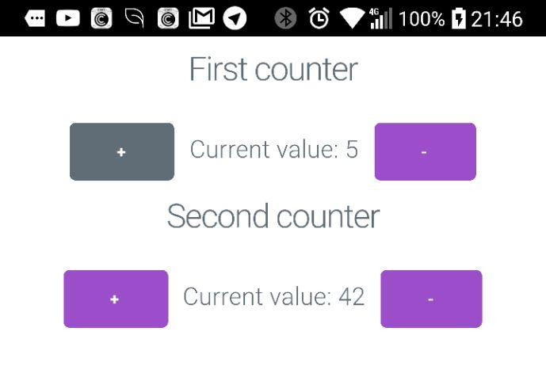

FRP на фронтенде и reflex-dom в больших проектах
Гуща А.В. aka NCrashed
HXR Team
## Проекты * Туроператор (2016) * Keenetic Speed test system * Cyberleninka Антиплагиат * Собственный PoS блокчейн
## План * Испробованные альтернативы * Введение в FRP в reflex-dom * Архитектурные решения
## В чём проблема? * Команда из хаскеллистов * Хочется ФП и не хочется JS * Минимизация переучивания
## Альтернативы * Elm * Purescript * GHCJS
## Elm * Сильно ограничен как язык * Нужно дублировать общий код * Композируемость
## Purescript * Нет STM, отличия в семантике * Нужно дублировать общий код * Медленнее GHCJS
## GHCJS Плюсы: * Полная реализация GHC (Threads, STM, WeakRef ...) * Переиспользование кода * Минимальные затраты на изучение * Композируемость виджетов (reflex-dom) * Кросскомпиляция на мобилки (reflex-dom)
## GHCJS Минусы: * Большой выхлоп (20 мб без оптимизации, 500кб оптимизированный) * Перенос вёрстки дизайнеров * Следить за производительностью
## Обзор FRP Ключевые понятия: * Event - дискретный поток значений (push); * Behavior - непрерывный поток значений (pull); * Dynamic - непрерывный поток с нотификацией (push-pull); * Switching - перестройка потоков в runtime.
## Event  ``` Haskell type Event a = [(Time, a)] instance Functor Event ```
## Behavior  ``` Haskell type Behavior a = Time -> a instance Monad Behavior ```
## Dynamic  ``` Haskell type Dynamic a = (Behavior a, Event a) instance Monad Dynamic ```
## Switching  ``` Haskell widgetHold :: m a -> Event (m a) -> m (Dynamic a) ```
## Counter <iframe data-src="./demo_counter.html" style="width: 100%"></iframe> ``` Haskell decE :: Event () <- button "-" valD :: Dynamic Int <- foldDyn ($) 0 $ leftmost [ (\v -> v+1) <$ incE , (\v -> v-1) <$ decE ] dynText $ do val <- valD pure $ "Current value: " <> showt val incE :: Event () <- button "+" ```
## Монадный стек * MTL like tagless final * newtype of ReaderT * Логическое разделение контекстов
## Авторизация ``` Haskell type MonadFront m = ( MonadLocalized m , MonadMaybeAuth m , MonadErrorPoster m , MonadMainSocket m) type MonadFrontAuth m = ( MonadFront m , MonadAuthorized m) ```
## Авторизация ``` Haskell class MonadWidget m => MonadMaybeAuth m where isAuthorized :: m (Dynamic Bool) getAuthInfoMaybe :: m (Dynamic (Maybe AuthInfo)) class MonadMaybeAuth m => MonadAuthorized m where getAuthInfo :: m (Dynamic AuthInfo) ```
## Авторизация ``` Haskell liftAuth :: MonadMaybeAuth m => m a -> (forall n . MonadAuthorized n => n a) -> m (Dynamic a) ```
## Локализация ``` Haskell data Language = Russian | English class MonadWidget m => MonadLocalized m where setLanguage :: Language -> m () getLanguage :: m (Dynamic Language) class LocalizedPrint a where localizedShow :: Language -> a -> Text localizedShowCased :: GrammarCase -> Language -> a -> Text ```
## Локализация ``` Haskell instance LocalizedPrint DisputeSide where localizedShowCased _ English v = case v of DisputeClaimant -> "claimant" DisputeDefendant -> "defendant" localizedShowCased gc Russian v = case v of DisputeClaimant -> case gc of Nominative -> "истец" Accusative -> "истца" Genitive -> "истца" Dative -> "истцу" Instrumental -> "истцом" Prepositional -> "истце" ```
## Роутинг Два различных сценария: * Переход по урле (servant-router) * Навигация внутри виджетов (retractable)
## Servant like ``` Haskell type FrontendAPI = "about" :> View :<|> "restore" :> QueryParam "email" Text :> View :<|> View ```
## Servant like ``` Haskell handler :: RouteT FrontendAPI m (Event URI) handler = aboutPage :<|> (\email -> restorePage email) :<|> (mainPage) ```
## Retractable ``` Haskell type NextRetractable m a = Event (m (Retractable m a)) data Retractable m a = Retractable { -- | Next widget in chain retractableNextRoute :: NextRetractable m a -- | Result of execution of retractable widget , retractableResult :: a -- | Way to return to the widget at the same state , retractableReturn :: Dynamic (m (Retractable m a)) -- | Wich url to setup when the widget is active , retractableUrl :: Dynamic (Maybe Text) } ```
## Retractable <iframe data-src="./demo_retract.html" style="width: 100%"></iframe> ``` Haskell frontend :: MonadWidget t m => m () frontend = retractableStack "/" $ gogo "Go" gogo :: MonadWidget m => Text -> m (Retractable m ()) gogo str = do btnE <- button str pure Retractable { retractableNextRoute = gogo (str <> " Go") <$ btnE , retractableResult = () , retractableReturn = pure $ gogo str , retractableUrl = pure Nothing } ```
## Retractable ``` Haskell instance Functor m => Retractable m instance Applicative m => Retractable m instance Monad m => Retractable m ```
## Оптимизация * Google Closure Compiler * Преджатие zopfli * Ререндер DOM как можно ближе к листьям * GHCJS оптимизации `-dedupe -O2`
## Оптимизация ``` closure-compiler all.js \ --compilation_level=ADVANCED_OPTIMIZATIONS \ --externs=all.js.externs \ --externs=js/runmain.js \ --jscomp_off=duplicate \ --jscomp_off=undefinedVars \ --jscomp_off=externsValidation \ > all.min.js zopfli -i1000 all.min.js ```
## Мобильные приложения 
## Мобильные приложения * CSS вкомпиливаем через Clay * Все вызовы JS через API jsaddle. * Линковка к Android Native SDK. * C обёртки для вызова iOS Objective-C.
## Мобильные приложения * https://github.com/NCrashed/reflex-dom-mobile * https://github.com/obsidiansystems/obelisk